You can check the service status, and manage the problem status and history of the alarm occurred in the service.
What is AlertNow?
AlertNow is Korea’s first SaaS-based service incident lifecycle management platform. You can solve incidents quickly by checking the
Connect to AlertNow service
If you request for AlertNow service after signing in OpsNow, a list of OpsNow services is displayed at the top of the screen.
Among those services, select “AlertNow” to connect to the service.
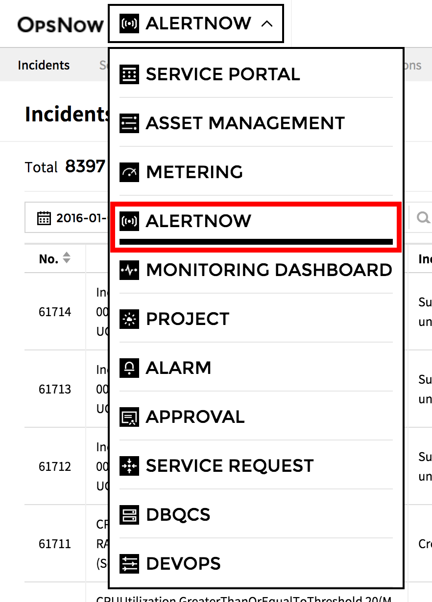
Menu Configuration
The menu configuration of each AlertNow service is shown below.
Item
Description
Incident
When collecting alerts, you can manage the status of the tickets created by incident policy.
Service
Service is a unit for managing incidents that occur in Integration.
It can be a service or application that is actually managed by the user.
In addition, it can be used freely at the user’s convenience.
Escalation
When incident occurs, you can manage as a rule by appointing manager to handle it step by step and setting the action and time (timeout) to be processed.
Integration
It is an endpoint that connects notifications occurred in 3rd-party monitoring tools to AlertNow.
Extension
Extension is a feature that allows incident creation push created in AlertNow to export to external tools or services.
Personal Setting
It provides personalized features about personal information and notification rules of incidents.
Incidents
Overview
The Incidents menu provides a list of alerts and incidents that occurred in each service. Using the Incidents menu, the user can identify problems that need to be handled and record the processing status of each issue.
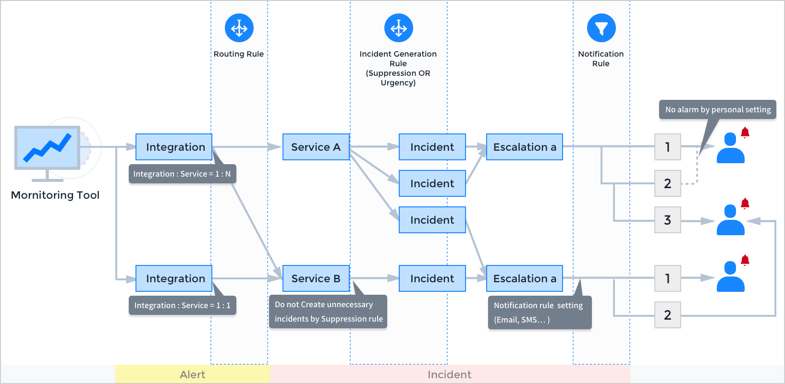Figure 1. Flow chart of Alerts and Incidents
Alert
If you receive a notification event occurred from monitoring tools or other services such as CloudWatch, Azure, or UIM through the Integration setting, it is created as an Alert.
Alert is raw data and the user cannot change the data or delete the created alert.
Incident is created based on alert. However, not all alerts are created as incidents, but only the ones that match the Incident creation rule is created as incidents.
The alert is not delivered to the user. Incident must be created through that alert in order to send notifications to the user.
Incident
When alerts are collected, an incident is created through preset Incident Creation Rule. After the incident is created, the user can record the processing status of the incident or receive notifications through Escalation.
If necessary, the user can set the maintenance schedule per service.
Stable Alarm Receive
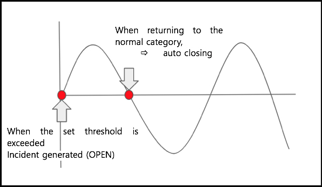
Incident is generated according to the threshold setting, and if the instance status gets back to normal, it automatically closes the existing incidents.
Limit unclosed incident creation
If there are unclosed incidents with the same Cloudwatch alert name and dimension information, incident creation is limited.
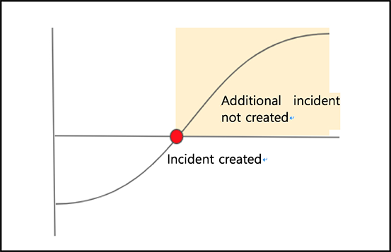
※ Note: Dimension information provided by Cloudwatch
Incident creation limit rules
For alerts that are not filtered from “Unclosed incident creation limit”, incident creation is limited by applying the rules set from the service.
However, there must be unclosed incidents.
Also, the user can handle the problems according to the user’s judgment by creating the incidents manually even if the alerts have not been created. (To be scheduled)
The user can create as incidents by selecting alerts that are not created because of the alert rules. (To be scheduled)
The user can manually create incidents even if no alerts have been created. (To be scheduled)
The user can connect to other incidents by selecting alerts that incident have already been created. (To be scheduled)
Alert and Incident relation
From what’s above, Alert and Incident can have the following relationships:
Based on Alert
Incident creation
Alert : Created Incident
[ 1 : 1 ]
Reference Alert
Alert : Referred Alert
[ 1 : N ] (To be scheduled)
Reference Incident
Alert : Referred Incident
[ 1 : N ] (To be scheduled)
Based on Incident
Alert based on creation
Incident : Alert
[ 1 : 1 ]
Merge Incident
Incident : Merged Incident
[ 1 : N ] (To be scheduled)
Reference Incident
Incident : Referred Incident
[ 1 : N ] (To be scheduled)
Reference Alert
Incident : Referred Alert
[ 1 : N ] (To be scheduled)
Alerts can have the following Incident creation results:
Incident creation
Suppressed (by creation suppression rule)
Suppressed (by maintenance schedule)
Suppressed (by unclosed incidents)
Incident
Connection path: Incidents > Incidents
The Incidents menu provides a list of created incidents, so you can check the details per incident and record the processing status.
You can also search for specific incidents by setting the period and keywords.
Screen Layout
The Incident menu is divided into two areas as the below image.
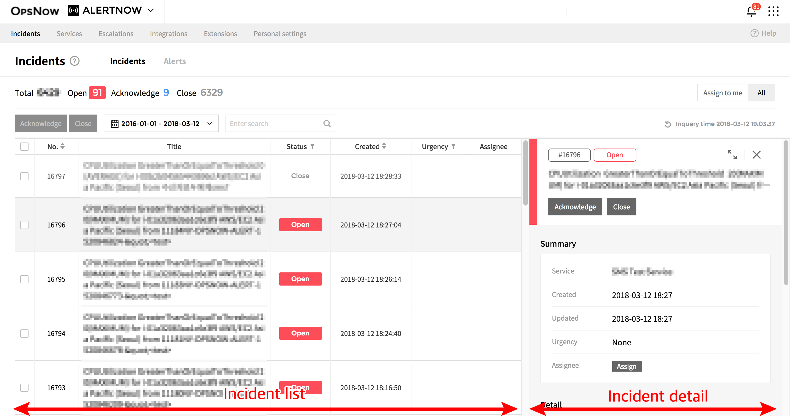
Incident List
You can check and search the list of incidents that have already occurred. If you select the incident in the incident list, the information of selected incident is displayed in the Details area. In the List screen, you can check the following information.
Item
Description
Number
Displays the Identification Number of the incident.
Title
Displays the title of the incident.
Status
Displays the status of the incident.
Incident has the following status values.
Open
Acknowledge
Close
Date Created
Displays the created date and time of the incident.
Date Changed
Displays the last updated date and time of the incident.
Urgency
Displays the urgency of the incident.
Service
Displays the name of the service where incident occurred.
Manager
Displays the name of the user designated as the manager of the incident.
Incident Detail
You can check the details of incident selected in Incident List.
The user can also view on the bigger screen by enlarging it upon the user’s needs. In the Incident Detail screen, you can check the following information.
Summary
Item
Description
Service
Displays the name of the service where incident occurred.
Date Created
Displays the created date and time of the incident.
Urgency
Displays the urgency of the incident.
Manager
Displays the manager of the incident.
Detail
Item
Description
Status
Displays the status of the incident.
Incident has the following status values.
Open
Acknowledge
Close
Escalation
Displays the Escalation Rule set in the incident.
Integration
Displays the name of the Integration that caused the incident.
Integration Type
Displays the Integration Type that caused the incident.
Reference alerts
Displays the alert that caused the incident.
Message
Displays an attached message when an alert occurs.
Description
Displays the description of the incident. You can enter the description manually.
Incident Status
Incident has three types of status values and depending on the status, the title area is displayed with different colors.
Open
The incident is newly created and has not yet been processed.
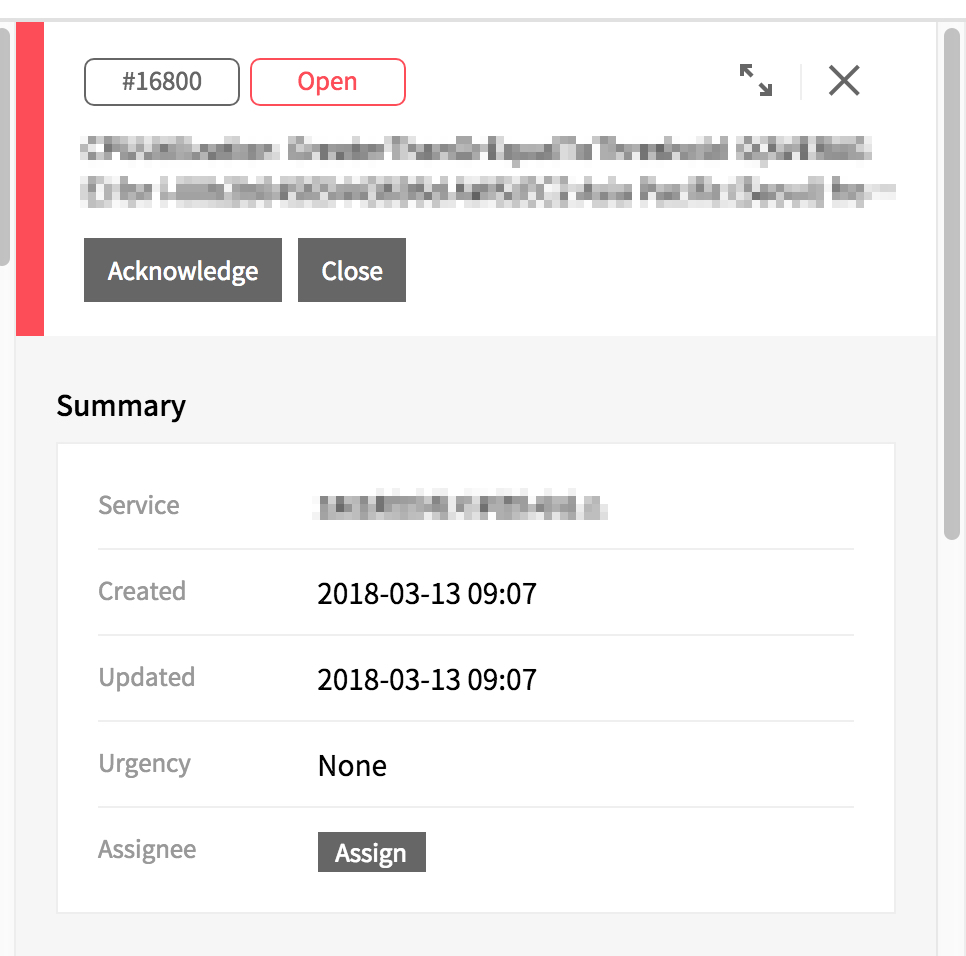Incident opened status
Acknowledge
The manager recognizes the problem and handles it.
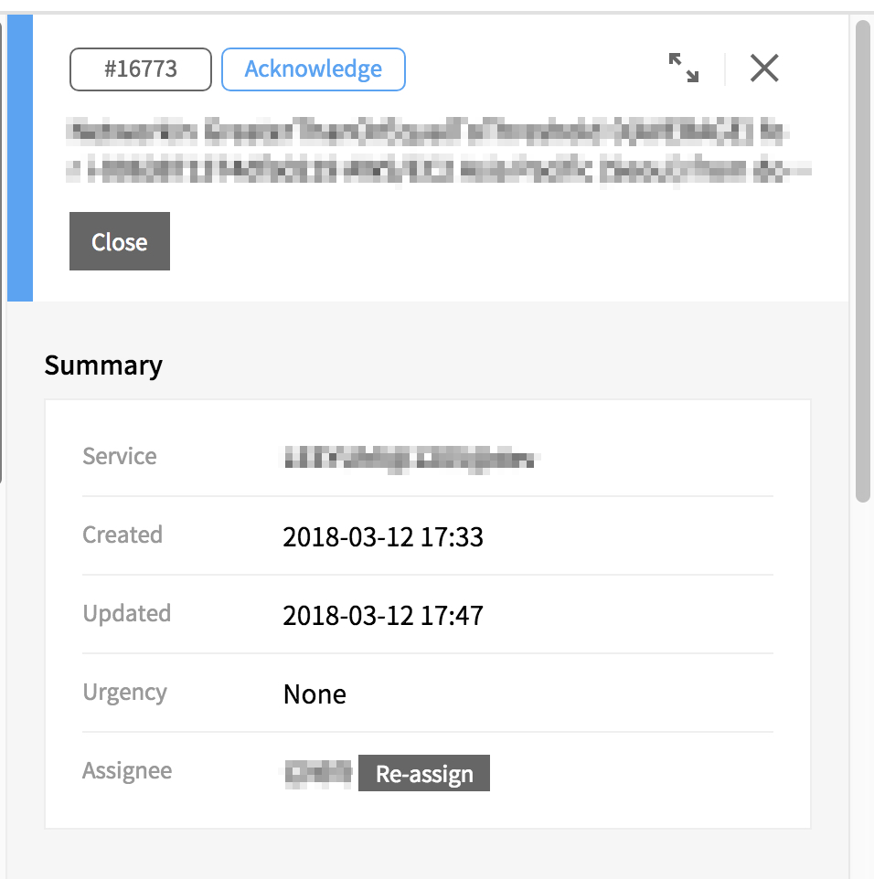Incident acknowledged status
Close
The problem has been solved and closed.
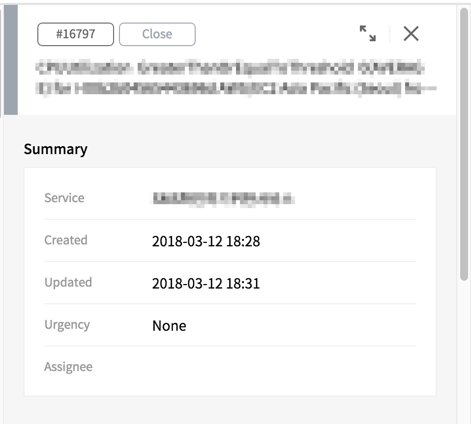Incident closed status
Incident Search
The user can search incidents by setting period/keyword conditions in the Incident List. The search results are displayed immediately in the Incident List.
Period Search
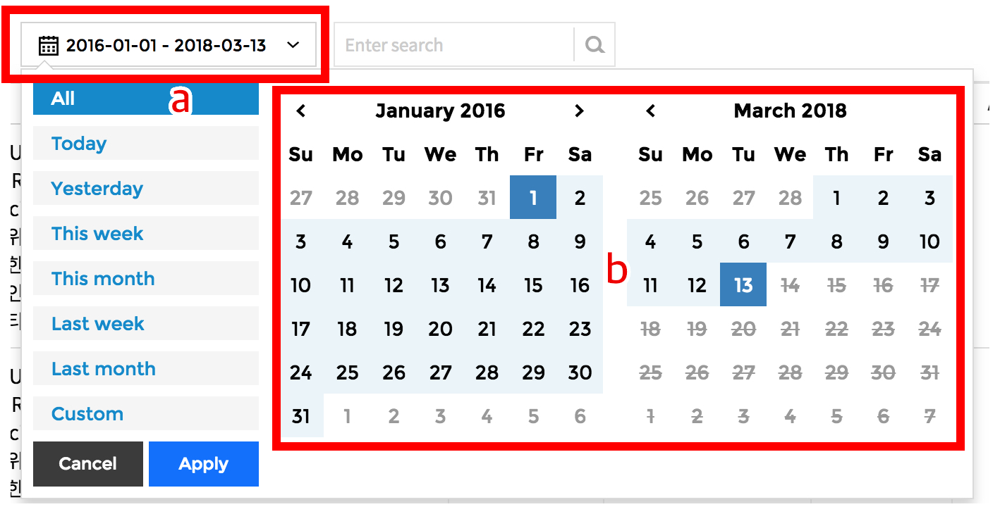
Preset period selection
The user can search incidents by setting the period/keyword conditions in the Incident List. The search results are displayed immediately in the Incident List.
Preset
Period
All
Search the entire period when incident occurred
Today
Select the current date
Yesterday
Select the yesterday’s date
This Week
Select the corresponding week based on the current time
This Month
Select the corresponding month based on the current time
Last Week
Select the previous week based on the current time
Last Month
Select the previous month based on the current time
Select Period
The user can select the search start/end date and time.
When selecting the period, incidents within the selected period are displayed in the Incident List.
In addition, the user can select the left/right arrow to set the previous/next cycle based on the currently set date.
Keyword Search
The user can enter keywords to search for incidents that match the entered keywords.
Among the incidents of selected period, the ones that match the entered keywords are displayed as search results.
Status filter
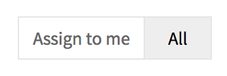Status filter (Upper right)
Among the incidents in the list, the manager can filter and check only the incident that the user has currently logged in.
Assign to me
In the Incident List, displays only the incident that the user has currently logged in.
All
Displays all incidents
Incident Manipulation
You can perform the following tasks on Incidents in the list.
Change status
You can change the incident status. You can change the status of individual incident, and you can select multiple incidents to change all status
Change Incident Status
In the Incident Detail screen, you can press the button at the bottom of the name to change the status.
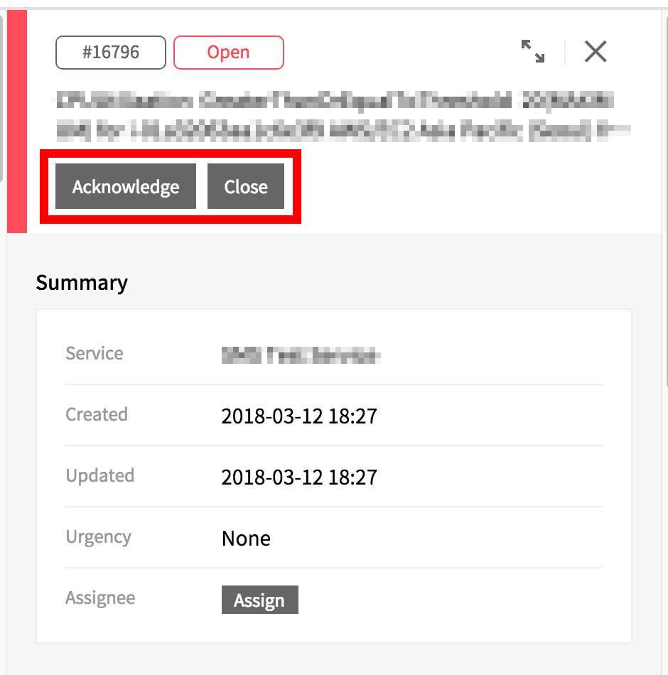
Incident in Open status can be changed to Acknowledge or Close status.
Incident in Acknowledge status can be changed to Close status.
Incident in Close status cannot be changed.
Change All Status of Multiple Incidents
You can change all status of incidents at once by selecting incidents to be changed from the Incident List.
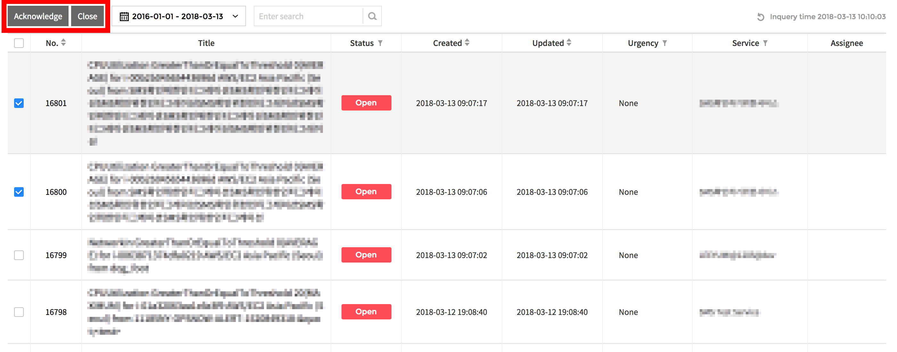
After selecting multiple incidents, you can change the status by clicking the [Acknowledge] [Close] button on the upper left of the Incident List
Assign and Change Manager
You can assign or change managers per incident. If you click the [Assign manager] button on the Incident Detail page, a popup that allows you to assign the manager will be displayed.
Select Incident to assign manager
The Manager field displays the name of the currently assigned manager. If you click the [Manager] button, a popup that allows you to change the manager will be displayed.
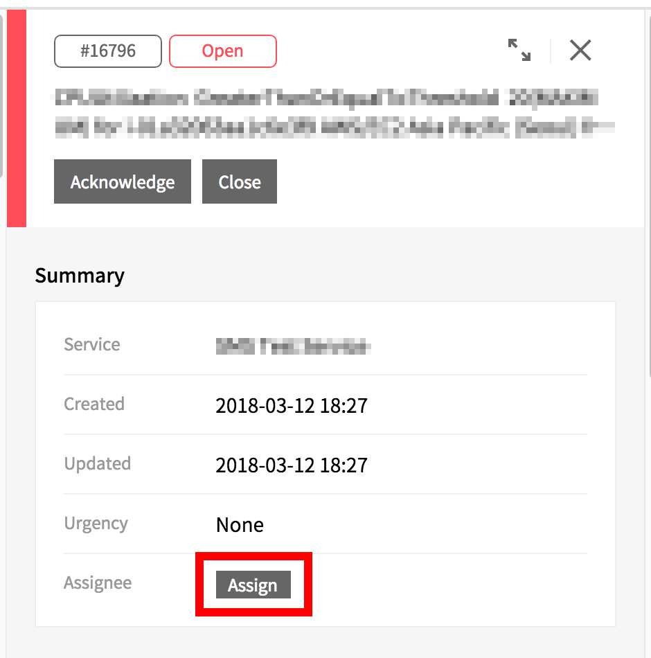
Select Manager
You can assign the manager by searching in Assign Manager popup.
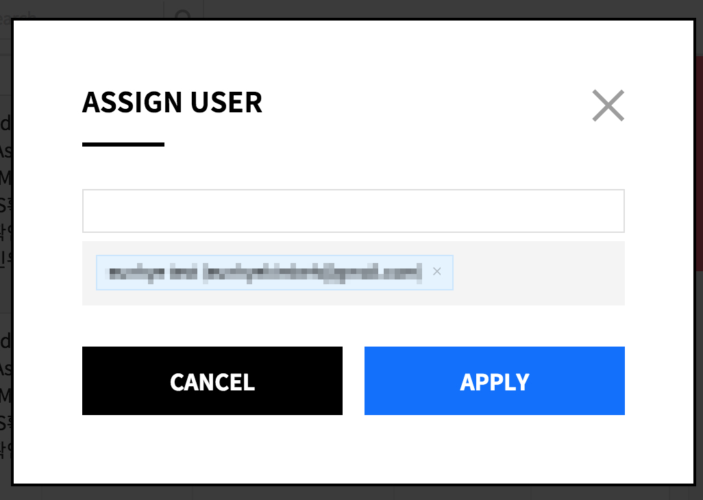
You cannot assign multiple managers for single incident.
Create comment
You can create comment on Incidents
Go to “Full screen” of the Incident Details screen
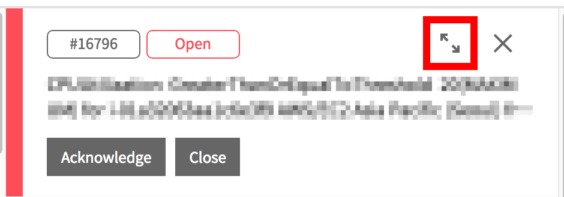
In the Incident Detail screen, enter either in the “All” or “Comment” at the Active History tab.
After entering comment, click [Write] button
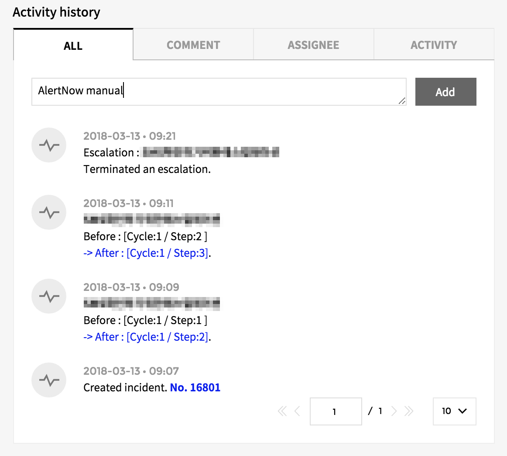
Check the entered comment
Change title
The title of each incident can be changed according to the user’s needs.
Click [Modify] button in the Title area of the full screen
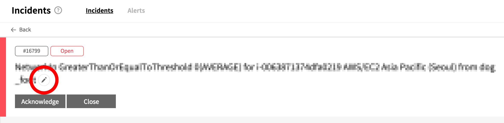
After editing Title, click [OK] button
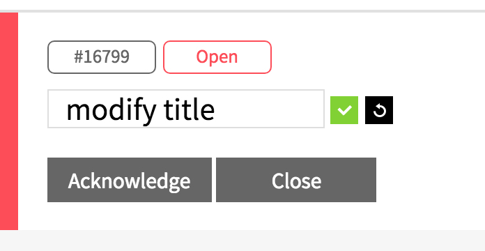
Check the changed title
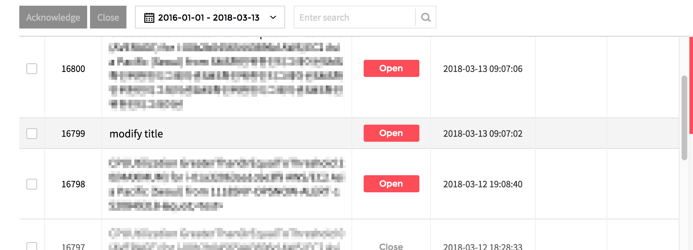
Check Reference Alert
You can check the reference alert for each incident, and go to the Details screen of each alert.
Check incident reference alert
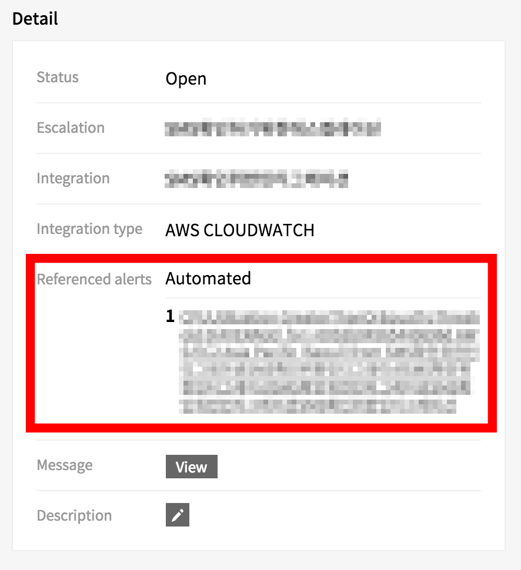
Click the reference alert to view alert details
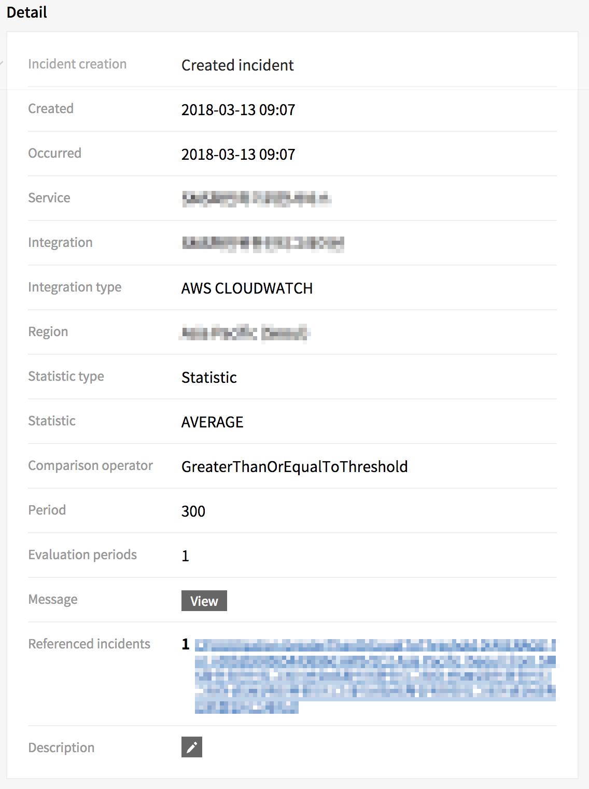
Alert
Connection path: Incidents > Alerts
The Alerts menu provides a list of alerts, so you can check the details.
You can also search for specific alerts by setting the period and keywords.
Screen Layout
The Alert menu is divided into two areas as the below image.
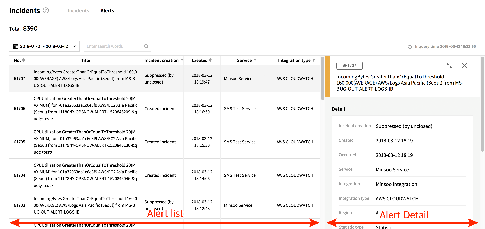Alert Configration
Alert List
You can check and search the list of alerts that have already occurred.
If you select the alert in the alert list, the information of selected alert is displayed in the Details area.
In the List screen, you can check the following information.
Item
Description
Number
Displays the Identification Number of the alert.
Title
Displays the title of the alert.
Incident Creation status
Displays whether the incident for corresponding alert has been created.
Date Created
Displays the created date and time of the alert.
Service
Displays the name of the service where the alert occurred.
Integration Type
Displays the integration type of the service where the alert occurred.
Alert Detail
You can check the details of alert selected in Alert List. The user can also view on the bigger screen by enlarging it upon the user’s needs. In the Alert Detail screen, you can check the following information.
Item
Description
Incident Creation status
Displays Incident creation results according to Incident creation rule.
Date Created
Displays the created date and time of the alert.
Date Occurred
Displays the occurred date and time of the alert.
Service
Displays the name of the service where alert occurred.
Integration
Displays the integration of the alert.
Integration Type
Displays the Integration Type of the service that caused the alert.
Region
Displays the region where the alert occurred.
Aggregation Type
Displays the aggregation type of the alert.
Statistic
Displays statistics set value of the alert.
Comparison operator
Displays the threshold setting comparison operator of the alert.
Collection Period
Displays the period of alert collection criteria set in the metric.
Measurement Period
Displays the alert measurement set in the metric.
Message
You can check the alert details as a message.
Reference
Displays the incident connected to the alert.
Description
Displays the description of the alert.
Alert Search
The user can search alerts by setting period/keyword conditions in the Alert List.
The search results are displayed immediately in the Alert List.
Period Search
Search conditions
Preset period selection
It provides the period that the user can select in Preset format.
The user can select the preset for the below period, and the selected period is displayed in the period selection area when selected.
Preset
Period
All
Search the entire period when incident occurred
Today
Select the current date
Yesterday
Select the yesterday’s date
This Week
Select the corresponding week based on the current time
This Month
Select the corresponding month based on the current time
Last Week
Select the previous week based on the current time
Last Month
Select the previous month based on the current time
Select Period
The user can select the search start/end date and time.
When selecting the period, alerts within the selected period are displayed in the Alert List.
In addition, the user can select the left/right arrow to set the previous/next cycle based on the currently set date.
Keyword Search
The user can enter keywords to search for alerts that match the entered keywords.
Among the alerts of selected period, the ones that match the entered keywords are displayed as search results.
Alert Manipulation
You can perform the following tasks on Alert in the list.
Check Message
You can check the detailed message about the alert that occurred.
Click [Message] > [View] button on the Alert Detail screen.
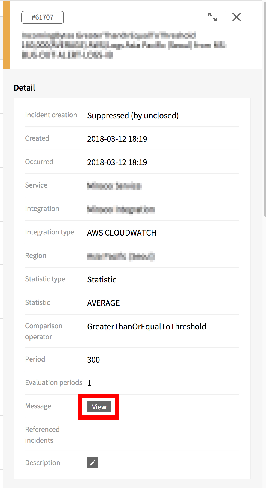
Detailed message is displayed in the new tab.
Enter Description
You can enter a detailed description about the alert that occurred.
Click {icon} icon on the Alert Detail screen
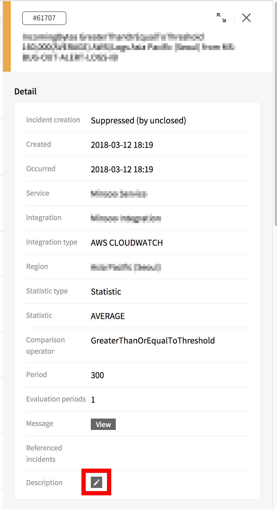
Enter the description and click {icon} icon
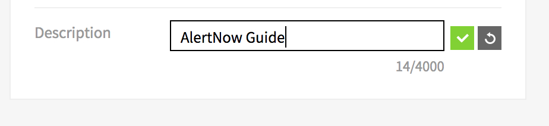
Check the entered description
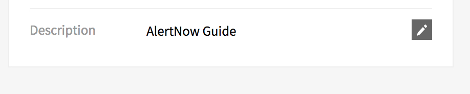
View Reference Incident
You can check the incident created by selected alert, and go to the Details screen of each incident.
Check Reference incident
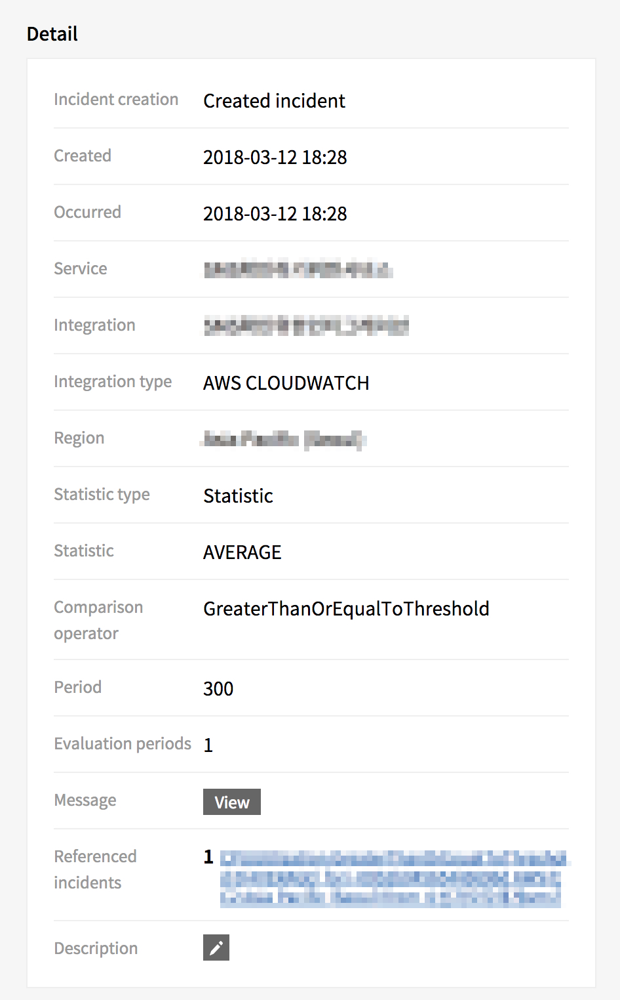
Click reference incident to view Incident details
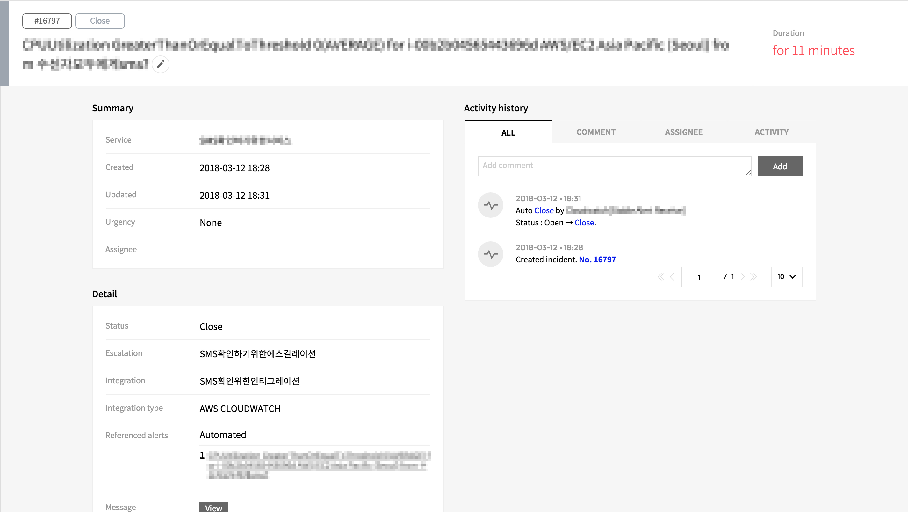
service
You can manage incidents and status by service.
Service is a unit for managing incidents that occur in Integration. It can be a service or application that is actually managed by the user. In addition, it can be used freely at the user’s convenience.
You can manage incidents by branching to service according to the routing rule set in integration.
Use Case for Service creation is shown below.
Case
설명
Use Case 1)
Create from “Service” menu
Click [Create Service] button at the top right of the Service menu.
Create the service.
In this case, you can create it with the Service Name and Escalation rules settings
Use Case 2)
Create at Integration Creation
on “Integration” menu
Click [Create Integration] button at the top right of the Integration menu
Select the service.
Integration name
Integration type
Service > Create new service
Use Case 1. Create from Service menu
Step 1: Select Services Menu
Click Services menu.
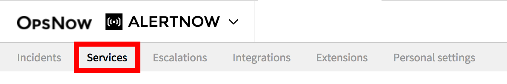
Step 2: Create New Service
Click [Create Service] button.
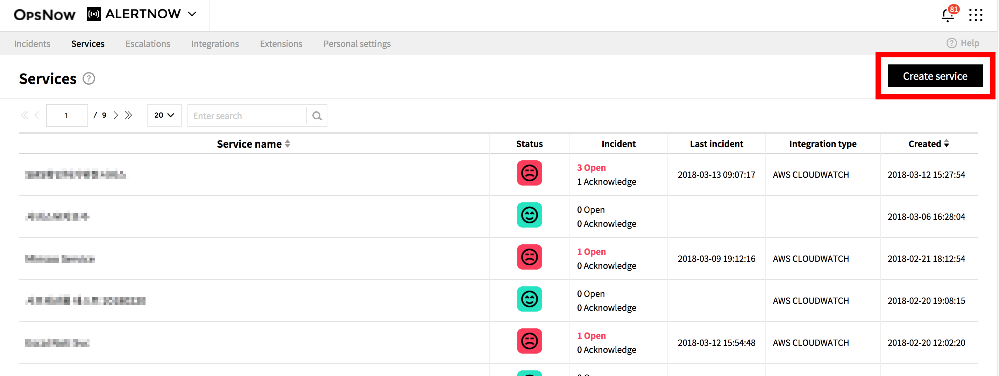
Step 3: Create Service
The input items for service creation are shown below.
Item
Description
Remark
Service name
Randomly enter a service name that the customer wants to create.
Required
Escalation rules
Escalation basic rules: If there are no created escalation rules, “Escalation basic rule” is created.
Add custom criteria: The user can determine the priority and select Escalation according to the conditions.
(If selected, the rule of the condition set by the user takes precedence over the default rule.)
Required
Incident generation rules
Incident suppression rules
If the condition items (Alert Summary, Alert Metric Name) occur consecutively,
you can set the period (seconds, minutes, hours, days) to prevent the occurrence of duplicate incidents.
Incident urgency rules
You can set the urgency of incident.
Optional
If there are no escalation rules, a Default Escalation Rule is automatically created.
(The Service creator is set as the default recipient.)
If there are escalations, click [Save].
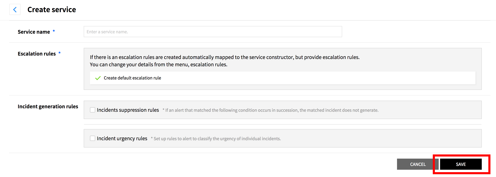
Step 4: Select Created Service
Click the created service to go to the following screen.
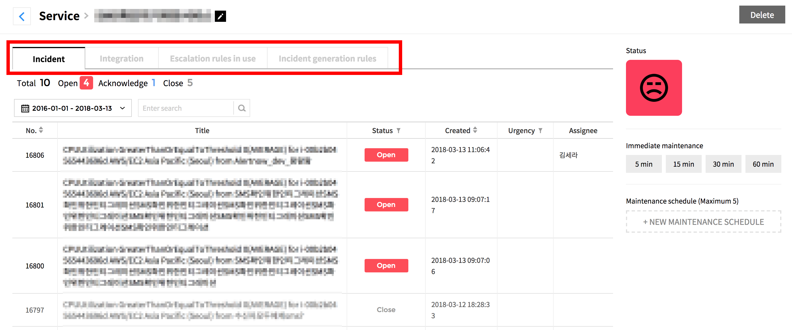
The contents of each tap are shown below.
Item
Description
Remark
Incident
You can check the Incident status by period and search condition.
Integration
You can check the integration information of the service.
Escalation rules in use
You can check the escalation information of the service.
Editable
Incident creation rules
You can check the incident creation rule of the service.
Editable
Step 5: Set Integration to the Created Service
Please refer to the Use Case 2) below
Use Case 2) Create at Integration Creation
Step 1: Select Integration Menu
Click Integration menu.
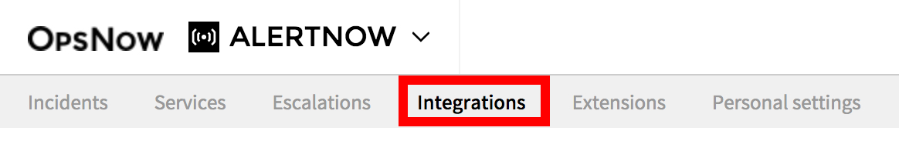
Step 2: Create New Integration
Click [Create Integration] button.
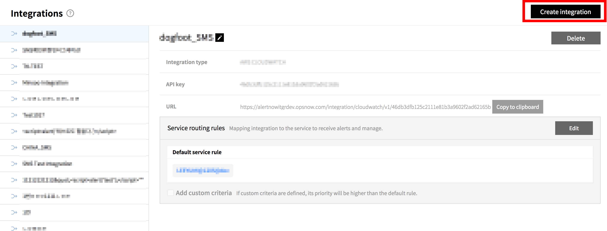
The input items for the Integration settings are shown below.
You can manage incidents by grouping multiple integrations and specifying as a customer-oriented service for customers to manage.
Item
Description
Remark
Integration Name
Customer can set Integration Name.
Required
Integration Type
The logo of the selected target is shown.
Cannot enter or edit
Service
Create New Service
When creating Integration, Service is also created at the same time.
Select Service
When creating Integration, the existing Service is mapped.
Selection required.
No duplicate selection.
The Creation Service screen is shown below.
Item
Description
Remark
Service name
Randomly enter a service name that the customer wants to create.
Required
Escalation rules
Escalation basic rules: If there are no created escalation rules, “Escalation basic rule” is created.
Add custom criteria: The user can determine the priority and select Escalation according to the conditions.
(If selected, the rule of the condition set by the user takes precedence over the default rule.)
Required
Incident creation rules
Incident suppression rules
If the condition items (Alert Summary, Alert Metric Name) occur consecutively,
you can set the period (seconds, minutes, hours, days) to prevent the occurrence of duplicate incidents.
Incident urgency rules
You can set the urgency of Incident.
Optional
Step 5: Save Created Integration and Service
Click [Save] button at the bottom right after entering “Integration Name” and creating or selecting Service about custom setting.
Escalations
When incident occurs, you can manage as a rule by appointing manager to handle it step by step and setting the action and time (timeout) to be processed.
Use Case for Escalation Policy creation is shown below.
Case
Description
Use Case 1)
Create from “Escalations” menu
Click “Create New Escalations” button at the top right of the Escalations menu.
Create the Escalation Policy.
Use Case 2)
Generate Default Escalation Rule
at “Service” creation
For creating “Service”, “Default Escalation Rule” is created if there are no existing escalation rules.
Use Case 3)
In case of creating
“Service” at the same time,
and if there are no existing
escalation rules created
When creating “Service” and “Integration” simultaneously,
“Integration” and “Default Escalation Rule” is created if there are no existing escalation rules.
Use Case 1. Create from Escalations menu
Step 1: Select Escalation menu
Click Escalation menu.
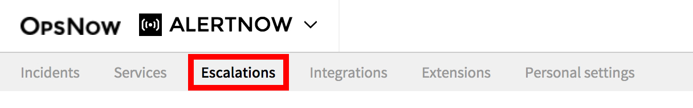
Step 2: Create New Escalation
Click [Create New Escalation] button.
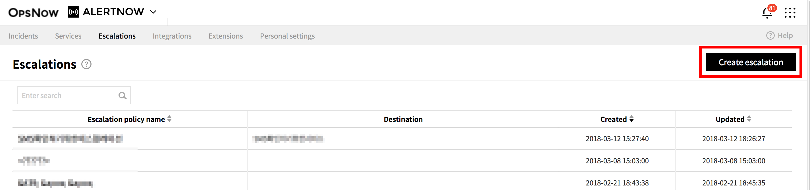
Step 3: Establish Escalation Policy
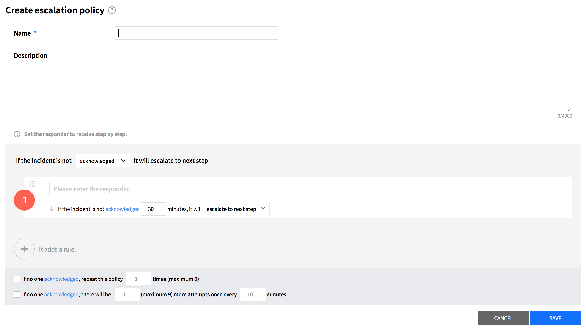
The input items for the Escalation settings are shown below.
Case
Description
Remark
Name
Customer can set Escalation Policy Name.
Required
Description
Adds a description for the escalation.
Optional
Rule Settings
If the Incident is not “acknowledged / closed” It will escalate to next step.
If not in the “Acknowledged” status,
If not in the “Closed” status,
Sets the Escalation Policy to be applied.
Time (Minutes)
Action
For sending notifications, you can set the time period in minutes.
After receiving notifications from recipients by setting the time period (in minutes),
you can select either “Escalation to the next step” or “repeat this step”.
Escalation to the next step: Performs the next escalation steps.
Repeat this step: Repeats the current step. Repeat cycle can be set in hours.
Required when selecting policy
Required when selecting policy
Additional item settings
If no action is taken even when Escalation is escalated to action and additional escalation,
you can set the following options.
If no one is acknowledged, repeat this policy (1) times.
> From step 1 to the last step, it is restarted (1) times.
> The maximum number of (1) attempts is 9.
If no one is acknowledged, there will be (n) notifications every (n) minutes for all responders.
> The maximum number of (1) attempts is 9.
> You can set the time interval of (2) minutes.
Option setting item
Step 4: Save created escalation
Save the Escalation setting as follows:
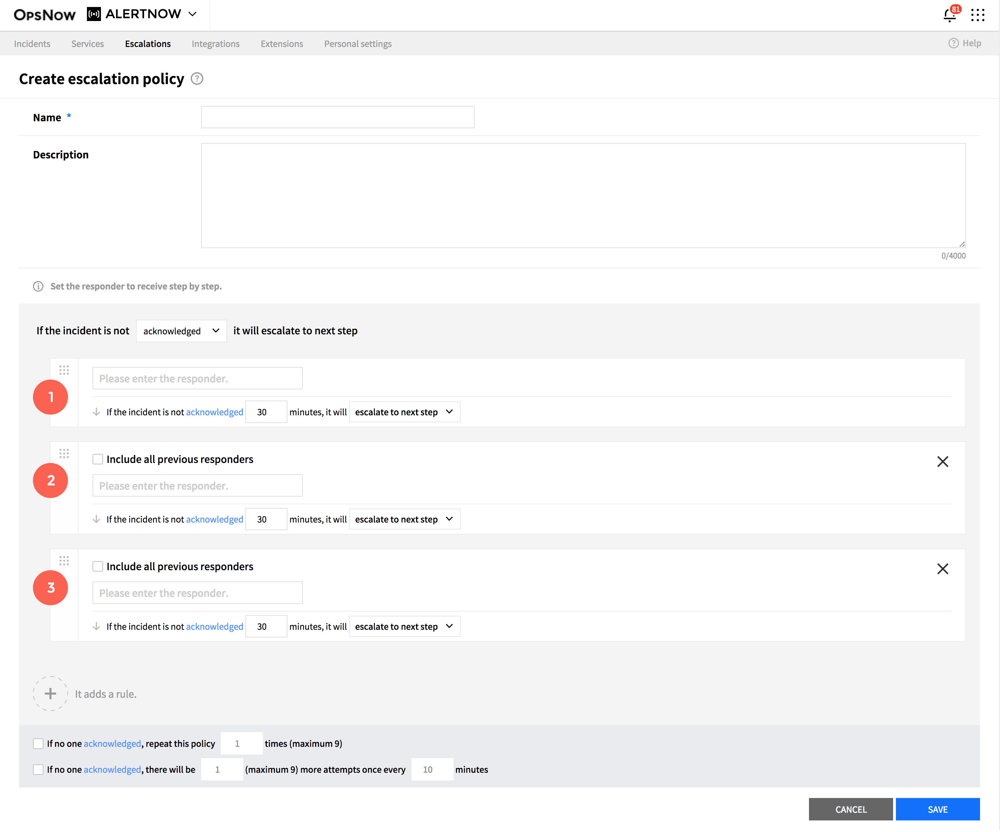
Use Case 2. Generate Default Escalation Rule at “Service” creation
Step 1: Select Services menu
Click Services menu.
Step 2: Create New service
Click [Create service] button.
Step 3: Create Default Escalation Rule
If there is no escalation rule, “Default Escalation Rule” is automatically created.
(The service provider is set as the default recipient.)
※ For more information about service creation, please refer to the Service Guide.
Use Case 3. In case of creating “Integration” and “Service” at the same time
Step 1: Select Integration menu
Click Integrations menu.
Step 2: Create New integration
Click [Create Integration] button.
When creating “Service” and “Integration” simultaneously, “Default Escalation Rule” is created if there are no existing escalation rules. (The Service provider is set as the default recipient.)
※ For more information about integration creation, please refer to the Integration Guide.
Integrations
You can forward and manage notifications occurring in the tool with AlertNow by selecting the tools or services you are using from the list of integrations provided by AlertNow.
Note: The integration resources provided by AlertNow are as follows.
AWS CLOUD WATCH: EC2, RDS, EBS, Redshift, ELB, S3 (To be updated when an item is added)
Integration settings
Integration settings guide is as follows.
Step 1: Select Integration Menu
Click Integrations menu.
Step 2: Create New Integration
Click [Create Integration] button.
The input items for the Integration settings are shown below.
You can manage incidents by grouping multiple integrations and specifying as a customer-oriented service for customers to manage.
Case
Description
Remark
Integration Name
Customer can set Integration Name.
Required
Integration Type
The logo of the selected target is shown.
Cannot enter or edit
Service
Create New Service
When creating integration, service is also created at the same time.
Select Service
When creating integration, the existing service is mapped.
Selection required.
No duplicate selection.
The Creation Service screen is shown below.
Case
Description
Remark
Service name
Randomly enter a service name that the customer wants to create.
Required
Escalation rules
Escalation basic rules: If there are no created escalation rules, “Escalation basic rule” is created.
Add custom criteria: The user can determine the priority and select escalation according to the conditions.
(If selected, the rule of the condition set by the user takes precedence over the default rule.)
Required
Optional
Incident creation rules
Incident suppression rules
If the condition items (Alert Summary, Alert Metric Name) occur consecutively,
you can set the period (seconds, minutes, hours, days) to prevent the creation of duplicate incidents.
Incident urgency rules
You can set the urgency of Incident.
The Select Service screen is shown below.
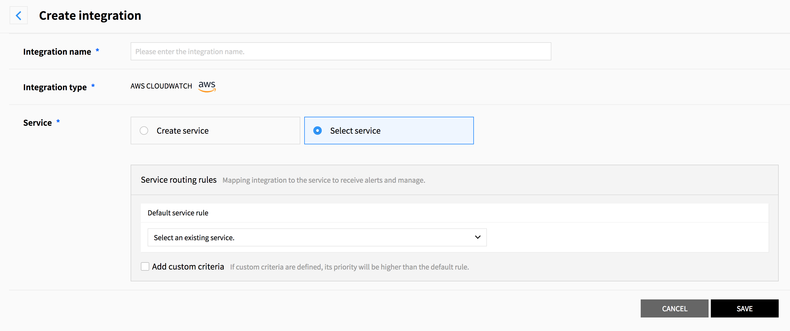
Case
Description
Remark
Service routing rules
Select basic routing service.
You can set the service routing by setting the condition items
(Alert Summary, Alert Metric Name) of Add custom criteria.
Selection required
Step 5: Save Created Integration
Click [Save] button at the bottom right after entering “Integration Name” and creating or selecting Service about custom setting.
Step 6: Check Created Integration Information
After performing 5 steps above, you will be automatically moved to the page below.
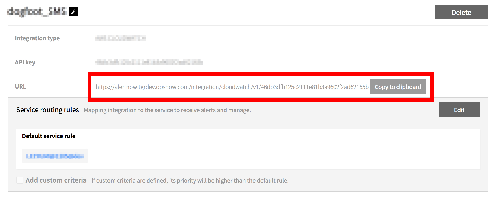
For “URL” of above information, please copy the SNS Webhook URL information to connect with AlertNow in SNS (Simple Notification Service) on AWS Console.
AWS SNS Dashboard
To connect AWS Cloud Watch with the integration created in AlertNow, you need to create a topic by connecting to the AWS Console.
AWS Console Connect
Go to the SNS Dashboard
Moving SNS Dashboard
Select Create topic on SNS Dashboard.
Step 1: Create New Topic
The input items are shown below.
Case
Description
Remark
Topic Name
It is a communication channel to send messages and subscribe notifications.
It is used to create an ARN for later created Topics.
Topic Name ARN Ex : arn:aws:sns:us-west-2:111122223333:MyTopic
Input required
Display Name
It is a display name for the topic represented when subscribing to SMS.
Input optional
Click “Create topic”.
Step 2: Create Subscription
Click [Create Subscription].
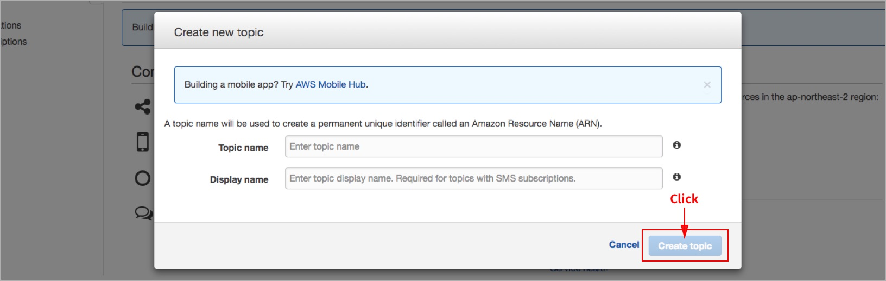
The following input window appears.
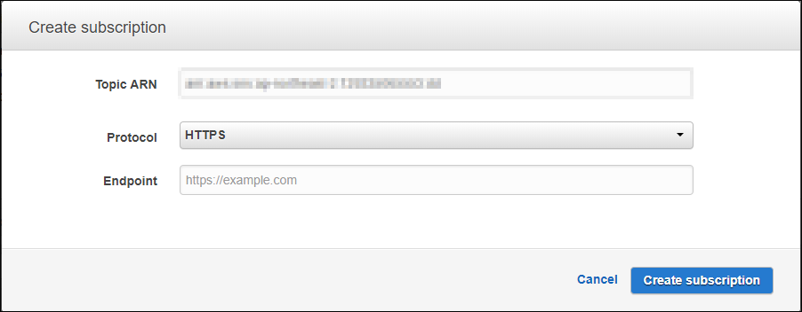
The input items are shown below.
Item
Description
Remark
Topic ARN
It is automatically reflected based on the created Topic Name.
The subscription will be created as below.
Click Refresh icon at the upper right. Approval confirmation is made for the Subscription ID.
Moving EC2 Console
Go to the EC2 Console to create an alert to connect to the AlertNow.
Step 1: Select Add/Edit Alarm
After selecting the corresponding EC2, select Action > CloudWatch Monitoring > Add/Edit Alarm as below.
Step 2: Create Alarm
Select [Create Alarm].
The input items are shown below
Item
Description
Remark
Send a notification to
Find and select the created topic.
Selection field
Whenever
Set the threshold value.
Input field
If you press the [Save] button, the following message will be shown.
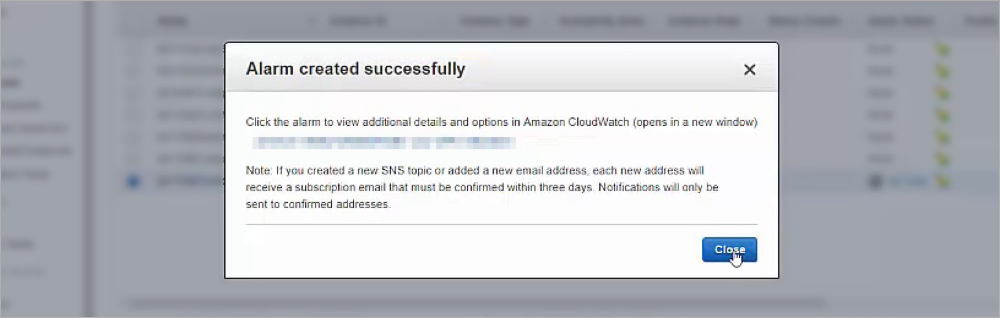
Adding Stable Alert Receive
What is “Stable Alert Receive”?
If incidents are created based on the threshold settings and the instance status gets back to normal, you can automatically complete the existing incidents.
Step 1: Select Add/Edit Alarm
After selecting the corresponding EC2, select Actions > Monitoring CloudWatch > Add/Edit Alert as below.
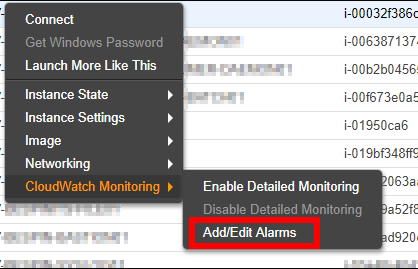
Step 2: Click “View” for alerts to set Stable Alert Receive
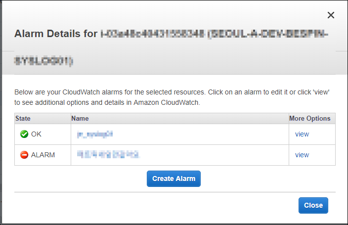
Step 5: After adding notifications, set the condition to “Normal” status and save changes
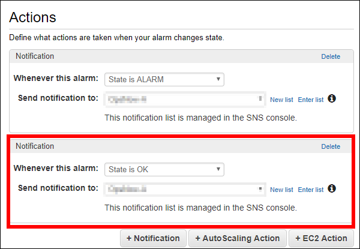
Step 6: Check setting changes
AlertNow > Incidents
When you first connect to AlertNow, “Incidents” screen is displayed as default.
Initial page of service connection
For first-time customers, it is displayed as “No Incidents”. A Wizard feature is scheduled to be provided to guide the customers to set the initial setting procedure manually in the future.
Service Initial Page
If you have completed creating integration for AWS Cloud Watch and setting alarms on the AWS Console according to the integration guide, you can check the incident upon connection.
Extensions
Extension is a feature that allows incident creation push created in AlertNow to export to external tools or services.
Currently, Slack is supported, and the extension settings for Slack are shown below.
AlertNow Extension Slack Settings
Step 1: Select Extensions Menu
Click Extensions menu.
Step 3: Register New Contact
Click [+Register Contact] button.
Step 4: Set Slack
Select “Slack”.
Click [Apply] button to create the Slack domain.
Slack Settings: Go to Slack page
Sign in to Slack.
If you have not signed up for Slack, please sign up for Slack first.
Step 1: Approve Slack for AlertNow
Review the information below and select [Authorize].
When the above message appears, select [OK].
Step 2: Check in AlertNow
In the “Personal Settings” menu in AlertNow, please check if the Slack domain is created in Contacts.
Personal Setting
This is a service that manages notification rules for receiving user’s basic information and notifications.
Click Personal Settings menu.
The “Personal Settings” configuration is shown below.
Service Tab Configuration
Description
Basic Information
It consists of personal information.
Name
Login email
Time zone
Escalation
Contacts
Register contacts to receive notifications.
Notification rules
The user can set notification methods by incident events.
Basic Information
개인 프로필과 연락처 정보를 노출 및 설정 할 수 있습니다.
Profile
Profile configuration information is shown below.
Item
Description
Remark
Name
User name
Login email
Login email information
Time zone
For individuals, set to Browser Time used at first connection
Auto
Changeable
Can be set
Escalation
Escalation Display that an individual belongs to or created
You can set the Time Zone.
Contacts
The Contact Method consists of the following.
Type
Description
Remark
Email
Email information to receive notifications
Changeable
Mobile
Mobile information to receive notifications
Slack
Slack information to receive notifications
Notification Rule
You can set the notification rules or check the configured notification rules.
You can set whether to send notifications and delivery method by each user.
You can set whether to send notifications and delivery method by the following situations.
Type
Description
Remark
When an incident is created
Set how to receive when incident is created.
Changeable
When an incident is assigned to me
Set how to receive when incident is assigned to you.
Changeable
When incident status is changed
Set how to receive when incident status is changed (acknowledged, closed).